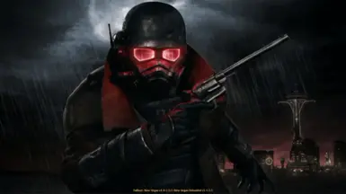

Games I really like

Bloodborne is really just one of those games that you can't get enough of everytime I feel like I'm getting borded with it
I find a new way to play though it or I use a weapon that I haven't used before. If there's one game on that I would recomend it would be bloodborne. I really like the other souls games to nut this was the first one I really got into.

The long dark is really hard to get into, but once you just start to walk around(you'll be doing a lot of that) and get to a high up area the games art style just makes everything look so amazing. This game is also pretty humbling, for example omce you get to that high place, once you see the land that you've been walking/running on for the past few hours, there's no other feeling like it.

And finally there fallout new vegas, this is probaly the best RPG out there. You name it you can most likly do it, wanna have your heart, spine, and brain replaced with synthietic compounds by a robot is oddly attracted to orgainic life? Go right ahead. The leveling and perk system is only outmatched by fallout 4, but the player choice is unrivailed. To my knowlegde there are over 20 differnt ending screens to the game. The only problem that I have with game is that it's a bit of a project to get the game working. If you want to know more about the games modding sceen then click here.